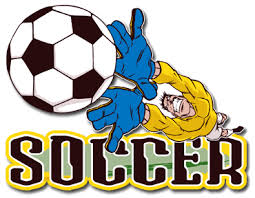

RULES:
- A football match is played by two teams, with each allowed no more than 11 players on the field at any one time, one of whom is a goalkeeper.
- A match is played in two 45 minute halves.
- The game begins with the toss of a coin, and the winning captain decides which goal to defend or to take the first kick off.
- All players must use their feet head or chest to play the ball. Only the goalkeeper is allowed to use their hands, and only within their designated goal area.
- The aim of the game is to score a goal, which is achieved by kicking or heading the ball into the opposition team's goal.
- If the ball touches or crosses the side line, it is thrown back in by the team that was not the last to touch the ball.
- The game is controlled by a central referee, and two linesmen. They award free kicks and penalties when rules are broken. For continual breaking of rules or for a bad foul, the player may be sent off.
Videos:
RULES FOR PLAYING SOCCER
SOCCER MATHES